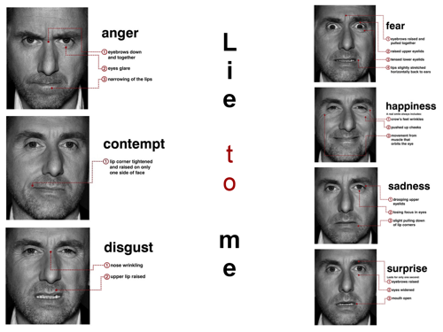

Introduction
This page summarizes the general education electives that I took while at Iowa State.
Each entry lists the course name and number as well as how it has helped me to grow.
The classes are listed in order from most recent to least. This is not an exhaustive list
by any means.
History 201 - Introduction to Western Civilizations, Part I
This class covered the history of Europe from the beginning of human history to 1500.
This included a weeklong study of Greek philosophy including Socrates, Plato, and
Aristotle. It made an impression on me because the Greeks believed that being able to
argue one's point was a trait that any responsible member of society should have. It was
a prerequisite to holding any power in their society, and it influenced nearly every
Western society that followed.
Speech Communication 212 - Fundamentals of Public Speaking
Very few people enjoy speech classes, and I was certainly not one of those people. Going in
to this class, I had a lot of anxiety about public speaking. Fortunately, I had a
fantastic TA who helped me get past my fears. This class also taught me to form better more
concise arguments, to reason better. This is a very important skillset that has helped me
in my algorithms class which requires a very methodical and logical approach.
English 314 - Technical Communication
In this course I learned to use Photoshop and InDesign to create professional looking
tutorials and documents. One of my projects was to create an informational sheet. I chose
to make mine about some of the more common tools found in Kali Linux. New members of one
of the clubs that I'm in have actually expressed interest in looking at it. Expect a link
on this site as soon as I find it.
Anthropology 202 - Biological Anthropology
Biological anthropology revolved around the evolution of humans and culminated in a unit on
forensic anthropology. This class was the first formal education in anatomy that I
received. Besides the anatomy lesson, the forensic anthropology unit was a lesson in
detective work. This lesson helped me when I started learning about network forensics and
even helped my team and I to win the 2015 National Cyber Analyst Challenge.
LAS 103C - Communication Frontiers
This was a half-semester seminar on body language and facial expressions as they relate to
violence. Obviously, as a software engineer I don't really deal with violent people.
However, this class helped me to understand micro expressions. These can be very useful
when giving a presentation or working in a group setting because people often hide what
they really feel about your ideas. If these feelings don't get addressed, team members can
feel that they are not being heard which can create tension. Tension in groups that need
to work together for any period of time can lead to problems.
